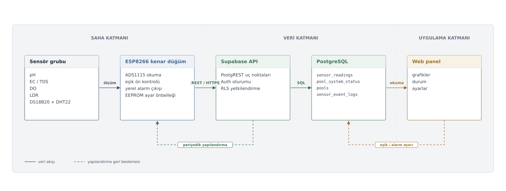
Şekil 1. Genel sistem mimarisi. Saha ölçüm katmanı, ESP8266 kenar düğümü, Supabase veri katmanı ve web paneli arasındaki ölçüm/yapılandırma akışı.
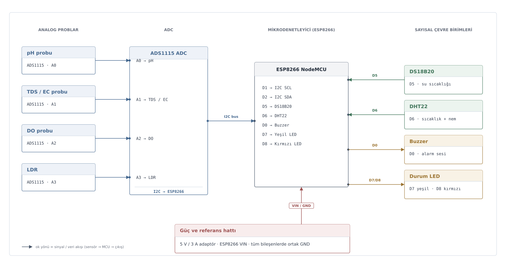
Şekil 2. Donanım bağlantı ve pin eşleştirmesi. Analog ve dijital sensörlerin ADS1115 ve ESP8266 pinleriyle açık bağlantı şeması.
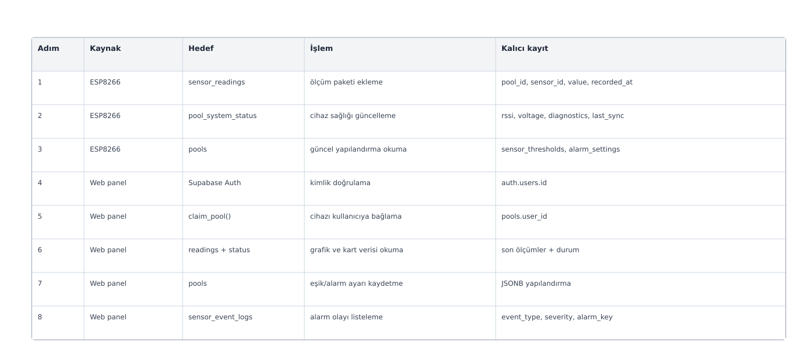
Şekil 3. Veri akışı ve işlem protokolü. ESP8266, Supabase ve web paneli arasında gerçekleşen temel okuma/yazma işlemleri.
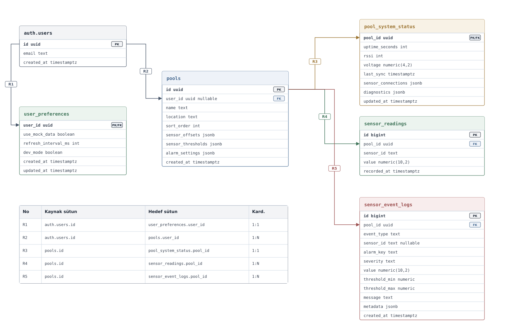
Şekil 4. Tam veritabanı ilişki diyagramı. Tablolar arasındaki PK/FK ilişkileri ve kaynak-hedef sütun eşleşmeleri.
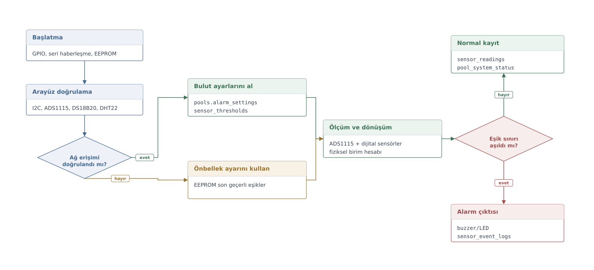
Şekil 5. Firmware karar akışı. ESP8266 yazılımında ağ, yapılandırma, ölçüm, eşik ve alarm kararlarının çalışma sırası.
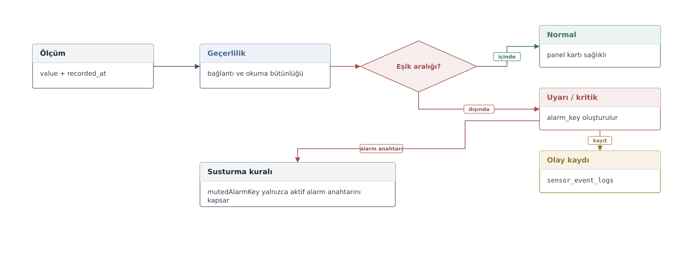
Şekil 6. Alarm karar modeli. Ölçüm geçerliliği, eşik karşılaştırma, susturma ve olay günlüğü ilişkisi.
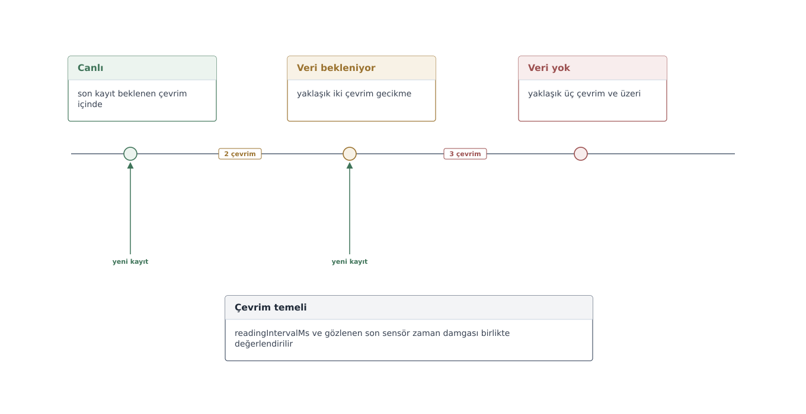
Şekil 7. Veri güncelliği durum modeli. Canlı, bekleniyor ve veri yok durumlarının cihaz çevrimine göre ayrılması.
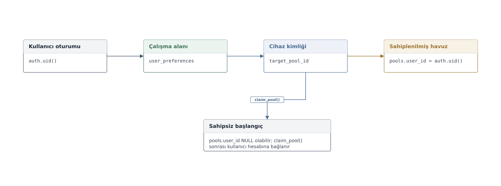
Şekil 8. Cihaz sahiplenme akışı. Kullanıcı oturumu, çalışma alanı ve claim_pool() ile cihazın kullanıcı hesabına bağlanması.
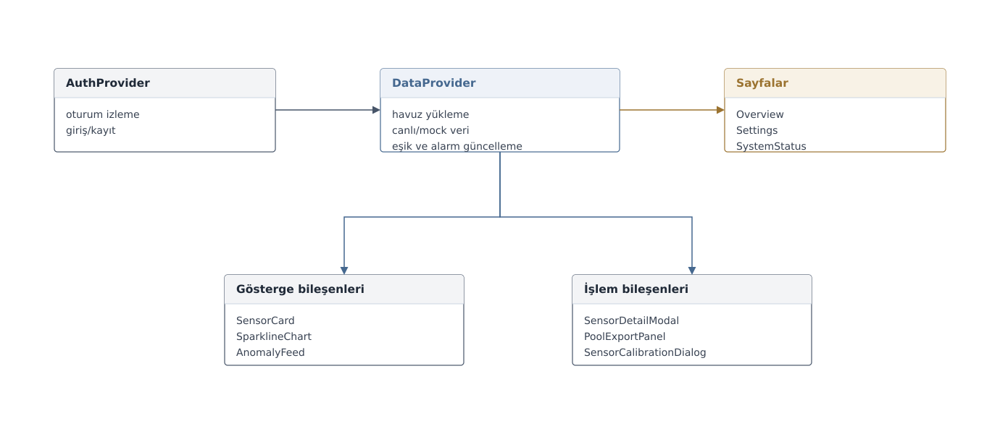
Şekil 9. Web panel modül mimarisi. React panelde oturum, veri sağlayıcı, sayfalar ve bileşenler arasındaki bağımlılıklar.
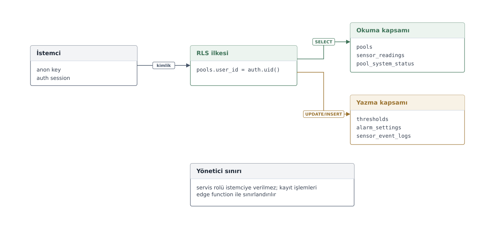
Şekil 10. Yetkilendirme ve veri erişim modeli. Auth oturumu, RLS politikası ve istemci/yönetici sınırlarının veri erişimine etkisi.
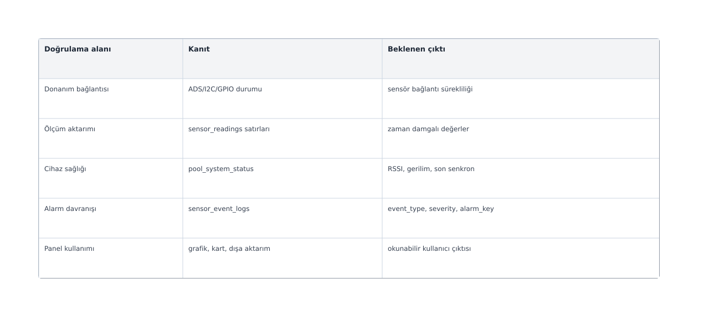
Şekil 11. Doğrulama matrisi. Donanım, veri aktarımı, cihaz sağlığı, alarm ve panel çıktılarının doğrulama kanıtları.
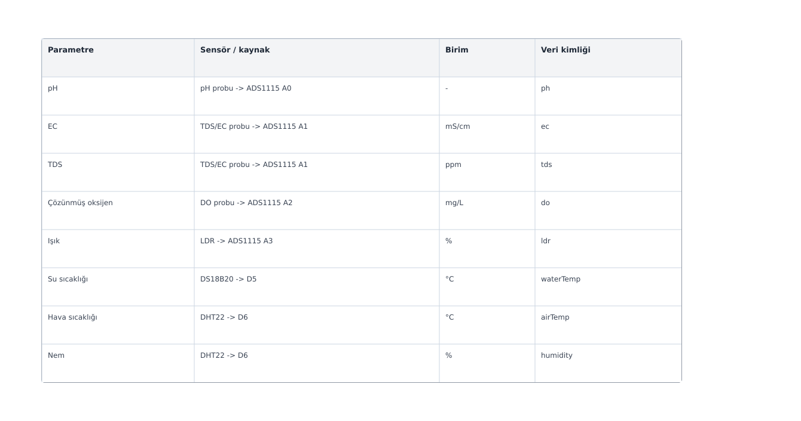
Şekil 12. Ölçüm parametreleri. Sensörler, birimler ve veritabanında kullanılan sensör kimlikleri.